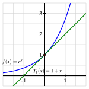
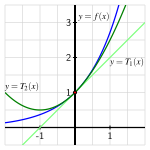

Can we find higher degree polynomials that approximate \(f(x) = e^x\) near \(a = 0\) more effectively than the approximation generated by the tangent line?
Early in our study of calculus in Section 1.8, we learned that if a function \(f\) has a derivative at a fixed value \(x=a\text{,}\) when we zoom in on its graph near \((a,f(a))\text{,}\) the function looks linear. Indeed, such a function is differentiable, and we know that near a fixed input value \(a\text{,}\)
Consider the function \(f(x) = e^x\) near \(a = 0\text{.}\) We know that \(f'(x) = e^x\text{,}\) so \(f'(0) = 1\text{;}\) along with the fact that \(f(0) = 1\text{,}\) it follows that the tangent line approximation is
Build a spreadsheet that computes the difference between \(f(x)\) and \(L(x)\) for \(x\)-values between \(-1\) and \(1\text{,}\) spaced \(0.1\) units apart. Note: we will revisit this spreadsheet for additional computations in Activity 8.1.4, so it would be ideal if you save your work for later reference.
Notice that the curvature in \(f(x) = e^x\) is what makes the linear approximation \(L(x)\) lose accuracy. What kind of simple function might do a better job approximating \(e^x\) than a linear one?
In Preview Activity 8.1.1, we found that the error in the tangent line approximation of \(f(x) = e^x\) at \(a = 0\) grows significantly as we consider \(x\)-values further and further from \(0\text{.}\) This is due to the fact that the tangent line is straight while the function \(f(x) = e^x\) has some curvature. So, we are going to try to find a quadratic approximation whose curvature matches that of \(f(x) = e^x\) at the point of tangency.
While we have usually used the notation “\(L(x)\)” for the tangent line, in what follows we will instead write “\(T_1(x)\)”, and think of this as “the degree \(1\) approximation”. In a similar way, we will write \(T_2(x)\) for the quadratic approximation.
Moreover, the functions \(T_1\) and \(f\) have two exact values in common. First, their function values agree at the point of tangency: \(T_1(0) = f(0)\text{.}\) And second, since \(T_1(x)\) is a linear function whose slope is \(f'(0)\text{,}\) it is also true that their derivative values agree at the point of tangency: \(T_1'(0) = f'(0)\text{.}\)
To generate a quadratic function that approximates \(f\) near \(a = 0\text{,}\) we choose to have this quadratic function not only share the same function value and derivative value as \(f\) at \(a=0\text{,}\) but also the same second 1
Here we are implicitly assuming that the function \(f(x)\) has a second derivative at \(a=0\text{.}\)
derivative value at \(a=0\text{,}\) in order to match the concavity or curvature of \(f\text{.}\) In other words, we are adding a term to the linear approximation that gives the same amount of curvature as the function \(f\text{.}\)
In Activity 8.1.2, we explore how these three requirements determine \(c_0\text{,}\)\(c_1\text{,}\) and \(c_2\) in \(T_2(x)\) for the function \(f(x) = e^x\text{.}\)
Let \(f(x)=e^x\) and \(T_2(x) = c_0 + c_1 x + c_2 x^2\text{.}\) We seek numerical values for the constants \(c_0\text{,}\)\(c_1\text{,}\) and \(c_2\) so that \(f(0)=T_2(0)\text{,}\)\(f'(0)=T_2'(0)\text{,}\) and \(f''(0)=T_2''(0)\text{.}\)
Note that since \(c_0\text{,}\)\(c_1\text{,}\) and \(c_2\) are constants, if we take the derivative of the quadratic function \(T_2\) using the sum and constant multiple rules, it follows that \(T_2'(x) = c_1 + 2 c_2 x\text{.}\)
Enter the formulas you’ve determined for \(f(x)\text{,}\)\(f'(x)\text{,}\)\(f''(x)\text{,}\)\(T_2(x)\text{,}\)\(T_2'(x)\text{,}\) and \(T_2''(x)\) in Table 8.1.3.
Table8.1.3.Formulas for \(f(x)\) and \(T_2(x)\) and their derivatives.
Next, observe that since \(T_2(x) = c_0 + c_1 x + c_2 x^2\text{,}\) it follows that \(T_2(0) = c_0\text{.}\) Reason similarly to determine the values of \(T_2'(0)\) and \(T_2''(0)\text{,}\) as well as those of \(f(0)\text{,}\)\(f'(0)\text{,}\) and \(f''(0)\) and enter these 6 values appropriately in Table 8.1.4.
Table8.1.4.Values of \(f(x)\) and \(T_2(x)\) and their derivatives at \(x = 0\text{.}\)
Now, recall that we want the function values, first derivative values, and second derivative values of \(f\) and \(T_2\) to match at \(a = 0\text{.}\) What does \(T_2(0) = f(0)\) tell us about the value of \(c_0\text{?}\) What does \(T_2'(0) = f'(0)\) tell us about \(c_1\text{?}\) How can we also find \(c_2\text{?}\)
Having now determined the numerical values of \(c_0\text{,}\)\(c_1\text{,}\) and \(c_2\text{,}\) plot the function \(T_2(x) = c_0 + c_1 x + c_2 x^2\) along with \(f(x)=e^x\) and \(T_1(x)=1+x\) in Figure 8.1.5. What do you notice? For about which values of \(x\) is \(|f(x)-T_2(x)| \lt 0.1\text{?}\)

Figure8.1.5.The function \(f(x)=e^x\) and its tangent line \(T_1(x)=1+x\) near the point \((0,f(0))\text{.}\)
While we will develop this idea more formally in Section 8.2, the polynomial \(T_2(x)\) that we found in Activity 8.1.2 is called the “degree 2 Taylor polynomial of \(f\) centered at \(a=0\)”.
A remarkable feature of mathematics is that when a process effectively generates an approximation, doing that same process again (perhaps with some slight modifications) often improves the approximation. In Activity 8.1.2, we found a quadratic approximation of \(f(x)=e^x\) near the point \((0,f(0))\) that results in an improvement over the linear approximation of \(f\text{.}\) It is reasonable to hope that a degree 3 polynomial approximation of \(f(x) = e^x\) will be even better.
\(T_3(0) = f(0)\text{,}\)\(T_3'(0) = f'(0)\text{,}\) and \(T_3''(0) = f''(0)\) so that \(T_3\) and \(f\) share the same function value, first derivative value, and second derivative value at \(a = 0\text{;}\) plus the additional condition that
We continue our investigation of this new approximation of \(f(x) = e^x\) in Activity 8.1.3, where we work to determine the values of \(k_0\text{,}\)\(k_1\text{,}\)\(k_2\text{,}\) and \(k_3\) plus explore how well \(T_3(x)\) approximates \(f(x)\) near \(a = 0\text{.}\)
By computing the second and third derivatives of \(T_3(x)\) and evaluating \(T_3\) and its derivatives at \(a = 0\text{,}\) fill in the blank entries in Table 8.1.9.
Table8.1.9.Formulas and values for \(f(x)\) and \(T_3(x)\) and their derivatives.
Next, recall that we want \(f\) and \(T_3\) to share the same function and derivative values at \(a = 0\) up to and including the third derivative. For instance, one of the four needed equations is \(T_3'(0) = f'(0)\text{.}\) What does our work in Table 8.1.9 tell us about the values of \(k_0\text{,}\)\(k_1\text{,}\)\(k_2\text{,}\) and \(k_3\text{?}\)
Having now determined the numerical values of \(k_0\text{,}\)\(k_1\text{,}\)\(k_2\text{,}\) and \(k_3\text{,}\) plot the function \(T_3(x) = k_0 + k_1 x + k_2 x^2 + k_3 x^3\) along with \(f(x)=e^x\text{,}\)\(T_1(x)=1+x\text{,}\) and \(T_2(x) = 1 + x + \frac{1}{2}x^2\) in Figure 8.1.10. What do you notice? For about which values of \(x\) is \(|f(x)-T_3(x)| \lt 0.1\text{?}\)

Figure8.1.10.The function \(f(x)=e^x\text{,}\) its tangent line \(T_1(x)=1+x\text{,}\) and the quadratic approximation \(T_2(x) = 1 + x + \frac{1}{2}x^2\) near the point \((0,f(0))\text{.}\)
What if we wanted a fourth degree polynomial approximation to \(f(x) = e^x\) near \(a = 0\text{?}\) Based on the patterns you’ve observed in \(T_1\text{,}\)\(T_2\text{,}\) and \(T_3\text{,}\) conjecture values for the constants \(w_0, \ldots, w_4\) for a function \(T_4\) of the form
that satisfies \(T_4(0) = f(0)\text{,}\)\(T_4'(0) = f'(0)\text{,}\)\(\ldots\text{,}\)\(T_4^{(4)}(0) = f^{(4)}(0)\text{.}\) Add this function \(T_4\) to your earlier work in Figure 8.1.10. What do you notice?
Subsection8.1.3As the degree of the approximation increases
Our work so far suggests that, given the function \(f(x)=e^x\text{,}\) we can find a degree \(n\) polynomial approximation, \(T_n\text{,}\) that satisfies
Moreover, since it appears that increasing the degree \(n\) improves the accuracy of the approximation, we now want to investigate further what happens as \(n\) increases.
In Section 8.2, we will develop a general approach to finding the coefficient of \(x^n\) in the degree \(n\) approximation; for now, we will use the \(4\) functions above and study further how the accuracy of the approximation changes with the degree.
We continue to work with \(f(x)=e^x\) and the four approximations of degree \(1\text{,}\)\(2\text{,}\)\(3\text{,}\) and \(4\) given by \(T_1(x)\text{,}\)\(T_2(x)\text{,}\)\(T_3(x)\text{,}\) and \(T_4(x)\text{.}\)
In Preview Activity 8.1.1, we built a spreadsheet that computed the differences between \(f(x)\) and \(T_1(x)\) for \(x\)-values between \(-1\) and \(1\text{,}\) spaced \(0.1\) units apart. Your spreadsheet started like the one shown in the table in Preview Activity 8.1.1.
Next, we build an updated version of this spreadsheet that computes similar differences between \(f\) and the three higher degree approximations we have found. In particular, we now want to have columns for \(\Delta x\text{,}\)\(x\text{,}\)\(f(x)\text{,}\)\(T_1(x)\text{,}\)\(T_2(x)\text{,}\)\(T_3(x)\text{,}\) and \(T_4(x)\text{,}\) plus the absolute differences \(|f(x) - T_1(x)|\text{,}\)\(|f(x) - T_2(x)|\text{,}\)\(|f(x) - T_3(x)|\text{,}\) and \(|f(x) - T_4(x)|\text{.}\)Hint: when building your entries, note that you can think of \(T_2(x)\) as \(T_2(x) = T_1(x) + \frac{1}{2}x^2\text{,}\) and similarly view \(T_3(x)\) as “\(T_2(x)\) plus one more term”.
The next four columns of your spreadsheet should begin as follows:
Table8.1.15.The absolute error between \(f(x) = e^x\) and its degree \(1\text{,}\)\(2\text{,}\)\(3\text{,}\) and \(4\) approximations at \(x=-1\) and \(x=-0.9\text{.}\)
We call the value of \(|f(x) - T_2(x)|\) the absolute error of the quadratic approximation of \(f\) at the value \(x\). What is the absolute error of the quadratic approximation at \(x = -1\text{?}\) at \(x = 1\text{?}\)
Study your spreadsheet for trends that you notice as the value of \(x\) changes or the degree \(n\) of the approximation changes. What are your observations?
Investigate the errors in the various approximations for a wider interval of \(x\)-values. For example, you might consider starting at \(x = -2\) with \(\Delta x = 0.2\text{.}\) What do you notice?
For the function \(f(x) = e^x\text{,}\) which bends considerably as we move away from \(a = 0\) (especially for \(x > 0\)), the tangent line is not a very good approximation for \(x\)-values that satisfy \(|x| > 0.5\text{.}\) For example, \(|f(0.5) - e^{0.5}| \approx 0.148721\text{,}\) so the linear approximation has an absolute error of more than \(0.1\) at \(x = 0.5\text{.}\)
Using the strategy of finding a higher degree polynomial whose function and derivative values match at the selected point of tangency, we are able to find higher degree polynomials that much more effectively approximate \(f(x) = e^x\) near \(a = 0\) than the approximation generated by the tangent line. For example, using the degree \(3\) approximation \(T_3(x) = 1 + x + \frac{1}{2}x^2 + \frac{1}{6}x^3\text{,}\) we see that \(|f(x) - T_3(x)| \lt 0.01\) for all \(x\) that satisfy \(|x| \lt 0.6\text{.}\)
It appears that the degree of the polynomial impacts the accuracy of the approximation of \(f(x) = e^x\) in at least two ways: if we fix an \(x\)-value, the higher the degree of the polynomial, the more accurate the approximation. In addition, raising the degree of the polynomial approximation appears to widen the interval on which the approximation is effective.
Suppose that \(T_2(x)=c_0+c_1x+c_2x^2\) is the second degree Taylor polynomial for the function \(f\) about \(x=0\text{.}\) What can you say about the signs of \(c_0\text{,}\)\(c_1\text{,}\)\(c_2\) if \(f\) has the graph given below?
(For each, enter \(+\) if the term is positive, and \(-\) if it is negative. Note that because this is essentially multiple choice problem it will not show which parts of your answer are correct or incorrect.)
Throughout our work in Section 8.1, we have focused on approximating the function \(f(x) = e^x\text{.}\) In this exercise, we change the function of interest to \(f(x) = \frac{1}{3}x^3 + \frac{1}{4}x^2 - 2x - 1\text{,}\) and consider the linear and quadratic approximations to \(f\) near \(a = 0\text{.}\)
Use your work so far to determine the formula for \(T_1(x)\text{,}\) the tangent line approximation to \(f(x)\) at \(a =0\) (which satisfies \(T_1(0) = f(0)\) and \(T_1'(0) = f'(0)\)).
Let \(T_2(x)\) be the quadratic approximation to \(f(x)\) near \(a = 0\) that satisfies \(T_2(0) = f(0)\text{,}\)\(T_2'(0) = f'(0)\text{,}\) and \(T_2''(0) = f''(0)\text{.}\) You might start by letting \(T_2(x) = c_0 + c_1 x + c_2 x^2\text{,}\) and creating an updated table like the one shown in Table 8.1.22.
Use your work in Table 8.1.22 to find the formula for \(T_2(x)\) that satisfies \(T_2(0) = f(0)\text{,}\)\(T_2'(0) = f'(0)\text{,}\) and \(T_2''(0) = f''(0)\text{.}\)
In this exercise, we extend our work in Exercise 8.1.5.3. We continue to consider the function \(f(x) = \frac{1}{3}x^3 + \frac{1}{4}x^2 - 2x - 1\text{,}\) but now build the cubic (degree \(3\)) approximation to \(f\) near \(a = 0\text{.}\)
Let \(T_3(x) = k_0 + k_1x + k_2x^2 + k_3x^3\) and determine \(T_3'(x)\text{,}\)\(T_3''(x)\text{,}\) and \(T_3'''(x)\text{.}\) In addition, determine \(f'''(x)\text{.}\) Record your results in Table 8.1.27, along with the values of each of these functions at \(a = 0\text{.}\)
Use your work in Table 8.1.27 to find the formula for \(T_3(x)\) that satisfies \(T_3(0) = f(0)\text{,}\)\(T_3'(0) = f'(0)\text{,}\)\(T_3''(0) = f''(0)\text{,}\) and \(T_3'''(0) = f'''(0)\text{.}\)